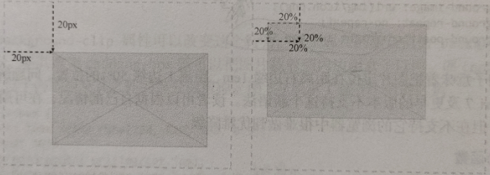
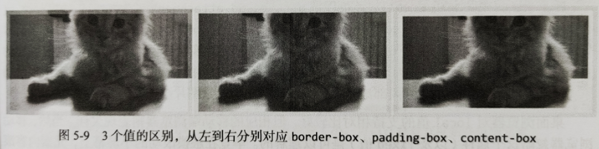

下面尝试把背景图片定位到元素中心，背景图片的位置由 background-position 属性控制。
为了更大的屏幕上也能覆盖整个元素，我们特意使用大图，在较小的屏幕上图片上端的边缘会被切掉，但至少图片是居中的。
.profile-box {
width: 100%;
height: 600px;
background-color: #8da9cf;
background-image: url("img/big-cat.jpg");
background-repeat: no-repeat;
background-position: 50% 50%;
}
background-position 属性既可以使用关键字，也可以使用像素、em 或百分比。
最简单情况下，可以只给两个值：
如果使用像素或 em 单位来设置背景图片的位置，那么图片的左上角会相对于元素的左上角定位，也就是会偏移指定的数值。比如，要是在水平和垂直方向都指定了 20 像素，那么图片左上角就会偏移到距离元素左边和上边均为 20 像素的点。如果设置背景图片的位置时使用了百分比，那么情况就不一样了，百分比值不像绝对数值那样会定位背景图片的左上角，而是定位图片中对应的点。如果水平和垂直方向都设置为 20%，那么你定位的实际上是距图片左边和上边各 20% 的点，而这个点会与距离父元素左边和上边各 20% 的点重合。

使用关键字来对齐背景图片，在 x 轴上用 left、center、right，在 y 轴上用 top、center、bottom。
顺序一般是先 x 轴后 y 轴。
但在一个关键字后加上一个长度值的情况下，规则本身将无效，比如如下声明：
.box {
background-position: 50% left; /* 不要这样写 */
}
默认情况下，背景图片是绘制到元素边框以内的，如果把背景图片定位到边框下方，同时边框也设置为半透明的话，那么图片边缘就会出现班半透明的边框，
使用 background-clip 属性可以改变这个行为，这个属性默认值为 background-clip: border-box，将其改为 padding-box 就可以把图片裁剪到内边距盒子以内。而 content-box 值则会把图片位于内边距及其之外的部分裁剪。
.profile-box {
border: 10px solid rgba(220, 220, 160, 0.5);
padding: 10px;
background-image: url("img/cat.jpg");
background-clip: padding-box;
}

即使 background-clip 属性的值改变了，背景定位默认的原点仍然在代码中声明的内边距盒子（padding-box）的左上角，换句话说，定位值从元素边框内开始计算。
好在我们可以使用 background-origin 属性控制原点的位置。这个属性与 background-clip 一样，也接受盒模型相关的几个值：border-box、padding-box、content-box。
背景会附着在指定元素的后面，如果你滚动页面，那么背景也会随着元素移动而移动。可以通过 background-attachment 属性改变这种行为。
如果想让示例中的大背景图在页面滚动时“粘”在页面上，可以使用以下代码：
.profile-box {
background-attachment: fixed;
}
我们使用一张大图覆盖了整个元素，这样的话，如果是在小屏幕上，那么图片会被裁剪切掉。反之，如果是屏幕特别大，那么元素边缘可能出现空白，要避免上述情况，不管页面如何缩放，都让内容保持自己的宽高比，就要使用 background-size 属性。
给 background-size 明确指定一个值，可以重新设置图片大小，也可以让他随元素大小缩放而缩放。
.profile-box {
background-size: 400px 240px;
}
要让图片随元素缩放而缩放，则必须使用百分比值。不过要注意，百分比值并不是相对于图片固有大小，而是相对于容器大小。因此，简单地把图片宽度和高度都设置成百分比值，可能会因容器变化而导致图片变形。
更好的做法是只给一个维度设置百分比值，另一个维度设置关键字 auto，
.profile-box {
background-size: 100% auto;
}
首先，可以把背景大小设置为 contain，这个值可以让浏览器尽可能保持图片最大化，同时不改变图片的宽高比。(图片能完全展示，问题是可能会在水平或垂直方向出现空白)
.profile-box {
background-size: contain;
}
然后，第二个关键字是 cover，意思是图片会缩放以保证覆盖元素的每一个像素，同时不会变形。(图片会完全的充满元素，但是水平或垂直方向可能会被裁剪)
.profile-box {
background-size: cover;
}
第一，因为两个长度值既可以用于 background-position，也可以用于 background-size，所以两个都需要声明，而且要先声明 background-position，后声明 background-size，值之间以斜杠 / 分隔。
第二、因为 *-box 关键字（border-box、padding-box、content-box）既可以用于 background-origin，也可以用于 background-clip，所以规则如下：
如果只存在一个 *-box 关键字，则 background-origin 和 background-clip 都取这个关键字值。
如果存在两个 *-box 关键字，则第一个设置 background-origin，第二个设置 background-clip。
综合各种背景属性的例子：
.profile-box {
background: url("img/cat.jpg") 50% 50% / cover no-repeat padding-box
content-box #bada55;
}
.multi-bg {
background-image: url("img/spades.png"), url("img/hearts.png"),
url("img/diamonds.png"), url("img/clubs.png");
background-position: left top, right top, left bottom, right bottom;
background-repeat: no-repeat, no-repeat, no-repeat, no-repeat;
background-color: pink;
}
多重背景按声明的先后顺序自上而下堆叠，最先声明的在最上面，最后声明的在最下面。
也可以使用简写属性来声明多个背景图片：
.multi-bg-shorthand {
background: url("img/spades.png") left top no-repeat, url("img/hearts.png")
right top no-repeat, url("img/diamonds.png") left bottom no-repeat, url("img/clubs.png")
right bottom no-repeat, pink;
}
如果随后的背景属性值少于背景图片的个数，那么相应的值会循环使用。这就意味着，如果所有背景图片的当前属性值都一样，那么只需要声明一个；如果是两个值交替，那么只需要声明两个。
.multi-bg-shorthand {
background: url("img/spades.png") left top, url("img/hearts.png") right top,
url("img/diamonds.png") left bottom, url("img/clubs.png") right bottom, pink;
background-repeat: no-repeat;
}